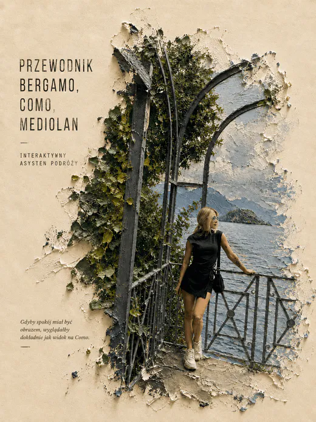

Trasy możliwe do wykonania
Plan dnia uwzględnia kolejność punktów, czas przejazdów i potrzebne przerwy. Gdy dzień jest intensywny, zaznaczam to wprost i podpowiadam, który element usunąć bez psucia całej trasy.
Blog Martyna Podróże
Znajdziesz tu gotowe trasy, porównania kosztów i konkretne wskazówki dotyczące transportu. Każdy artykuł ma pomóc Ci podjąć decyzję szybciej i ruszyć w drogę bez wielogodzinnego przekopywania map, rozkładów i forów.
Najnowsze

Włochy · 4 dniTo nie jest lista przypadkowych atrakcji. Publikuję trasy ułożone w logicznej kolejności, tak aby ograniczyć zbędne przejazdy i zostawić miejsce na odpoczynek. Przy każdym planie wyjaśniam, gdzie warto nocować, co zarezerwować wcześniej i z czego można zrezygnować, gdy masz mniej czasu.
W osobnych poradnikach będę porządkować też kwestie, które zwykle zabierają najwięcej czasu przed wyjazdem: dojazd z lotniska, bilety komunikacji, wybór dzielnicy na nocleg, orientacyjny budżet oraz wariant na deszcz. Ceny i rozkłady transportu zmieniają się, dlatego podaję datę aktualizacji i odsyłam do oficjalnych źródeł.
Blog jest dobrym miejscem, jeśli dopiero wybierasz kierunek albo chcesz samodzielnie przygotować wyjazd. Jeśli wolisz dostać całą trasę krok po kroku, z mapami i praktycznymi podpowiedziami w telefonie, zobacz interaktywny przewodnik po Lombardii. Możesz też poznać Martynę i sposób tworzenia planów albo sprawdzić indywidualne planowanie podróży.
Plan dnia uwzględnia kolejność punktów, czas przejazdów i potrzebne przerwy. Gdy dzień jest intensywny, zaznaczam to wprost i podpowiadam, który element usunąć bez psucia całej trasy.
Ceny i rozkłady komunikacji nie są wieczne. Dlatego oddzielam sprawdzone zasady planowania od danych, które trzeba ponownie potwierdzić, oraz podaję linki do oficjalnych przewoźników i atrakcji.
Nie każda popularna atrakcja jest obowiązkowa. Poradniki pokazują wariant podstawowy, możliwe zamiany i plan na gorszą pogodę, aby wyjazd pasował do Twojego tempa, zainteresowań i budżetu.
Najpierw wybierz długość wyjazdu i sprawdź godziny przylotu oraz wylotu. Dopiero później dodawaj atrakcje. Przy krótkim city breaku dzień przylotu rzadko jest pełnym dniem zwiedzania, a daleka wycieczka w dniu powrotu tworzy niepotrzebne ryzyko. Dobra baza noclegowa często daje większą oszczędność czasu niż hotel tańszy o kilka euro, ale położony daleko od dworca.
Następnie ustal po jednym priorytecie na każdy dzień i dopisz wariant, z którego możesz zrezygnować. Sprawdź transport na oficjalnej stronie, zapisz ostatnie rozsądne połączenie powrotne i zostaw margines na kolejki. Właśnie według tej kolejności są przygotowane plany na tym blogu: najpierw realna logistyka, potem atrakcje, jedzenie i zdjęcia.